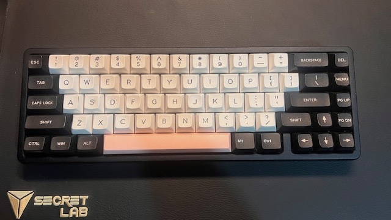
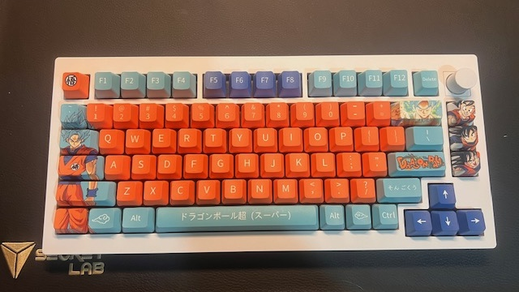
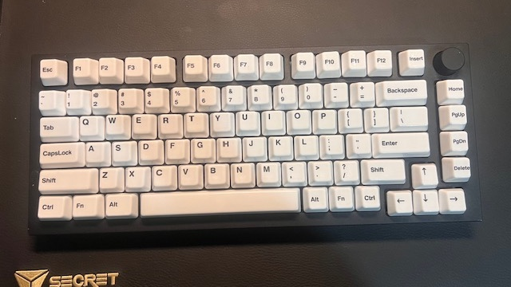
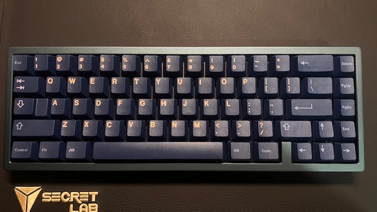
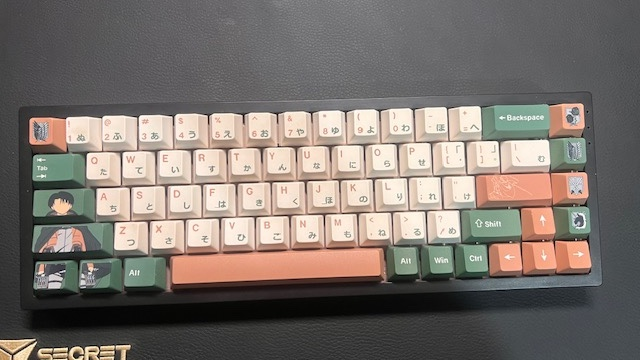

Hey,
I'm Matthew
I am currently a second year student studying a Bachelor of Software Engineering at UTS
Here are my other subjects that I am currently studying this year
- 31257 Information System Development Methodologies
- 31260 Fundamentals of Interaction Design
- 41200 Engineering Project Appraisal
The website you are currently seeing is made with HTML and CSS, using Visual Studio Code.
My hobbies during my spare time would be playing video games with my friends, going to the gym and also making mechanical keyboards for me and for others. I have also recently learnt how to code on my spare time and enjoy doing it and hopefully get some projects done for my portfolio.
Down below are some of my keyboard builds that I made from ordering parts and customizing them. I got into the hobby as I like to game and always loved hearing the sounds on TikTok. It took me a few years to understand how to make different parts sound better.
Here are some of my keyboard that I have built in the past few years :D
- 
- 
- 
- 
- 